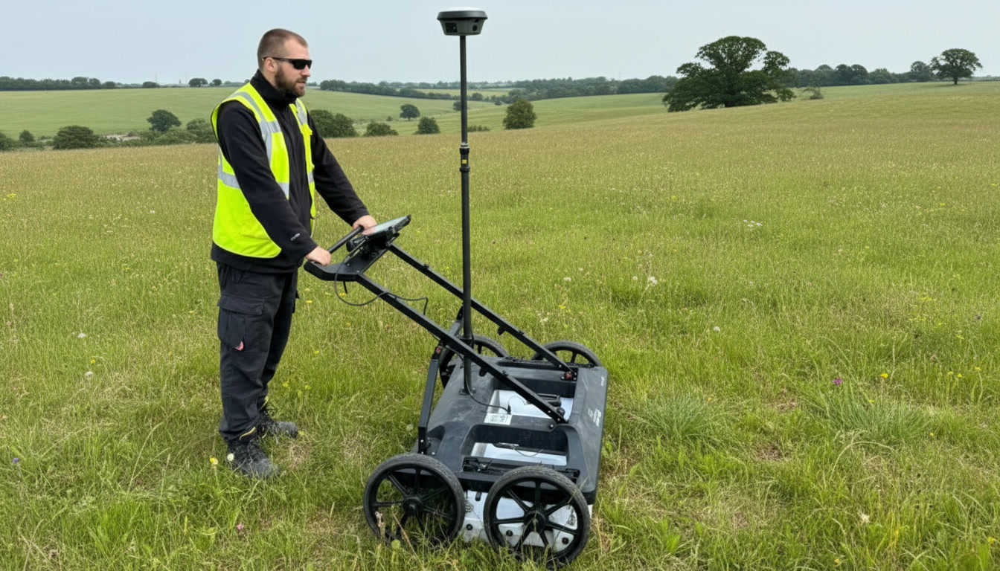

Know what is underground before you break ground. GPR utility detection and mapping serving Liverpool, Manchester and the North West.
Get a QuoteUnderground utilities are one of the most common causes of construction delays, cost overruns and safety incidents on development sites. Before any excavation, groundworks or foundation design begins, you need to know what is buried beneath your site. We deliver utility surveys across the North West using ground penetrating radar (GPR) to detect and map underground services across Liverpool, Manchester, Chester, Wigan, Warrington and the wider region.
Utility strikes are one of the leading causes of construction incidents. Knowing what is there before you dig is a safety obligation and a programme essential.
Ground penetrating radar detects both metallic and non metallic buried services including plastic pipes and concrete ducts that electromagnetic locators alone cannot find.
All detected utilities plotted onto a CAD drawing, colour coded by service type and quality level, ready for your design team to use immediately.

A utility survey locates and maps the underground services beneath a site including gas pipes, water mains, electricity cables, telecoms, drainage and other buried infrastructure. This data is essential before any excavation, construction or groundworks take place.
Our utility surveys use ground penetrating radar (GPR), a non invasive technology that detects both metallic and non metallic services including plastic pipes, concrete ducts and other buried features. Combined with electromagnetic location, our surveys provide the most comprehensive picture of what is below ground without the need for trial trenches.
Before groundworks, foundation excavation or any below ground construction activity on residential or commercial development sites across the North West.
Underground utility data informs drainage design, foundation strategy and services routing. Particularly important on brownfield sites where historical records may be incomplete.
Utility survey data supports drainage strategies and infrastructure planning as part of planning applications, particularly for new build and brownfield schemes.
Colour coded by service type, showing horizontal positions of all detected utilities.
Full documentation of methodology, detected services and quality levels in line with current utility survey standards.
Depth estimation where GPR data supports it, helping your team plan excavation safely.
Areas of uncertainty or high risk clearly highlighted so your team can plan accordingly.
Raw GPR data available on request for your engineering team or principal contractor.
Utility data can be delivered as a combined package with a topographical survey, giving your team a complete above and below ground picture of the site.